AlaskaStories.com
Stories 11...
Page contents:
Big Bottle Party: Society
06 Christmas form letter: ah, Christmas
07 Halibut and Salmon Drive: Fishing
07 Bou chase: Hunting
Hey, this aint no bullshit...
The 2006 Big Bottle Party...
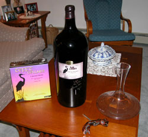
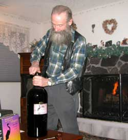
Take a perfectly normal adventurer, well a bit slaunchwise of normal, and apply more years, and his adventure-addled mind starts to perceive that each next wine party is an adventure. And so the adventure of the moment was the usual sort of thing in Fairbanks, a Salmanazar size bottle of a magnificent Tefft Cellars 97 cabernet sauvignon. That is 9 liters of wine, a case of 12 normal wine bottles in one.Show up at a party with a bottle of wine, and you will have friends. Show up with a Salmanazar size bottle of wine, and you will have more friends.
Unbeknownst to the mere wine neophytes who know only what they like, who have not yet memorized an impressive array of wine words to describe what they like with more words, the cork affects the taste of no small percentage of wine, about 12 percent. Wine that is "corked", that is, not favorably altered by certain fungi and mysterious things in the cork, is dutifully frowned upon, and set aside for cooking the dog food. The least expensive and most expensive wines are equally vulnerable to being corked. The effect is a gradient of ill flavor, noticed by a gradient of astute pallets, so a wine that is only a little corked may be debated by wine connoisseurs, while a wine that is undrinkably corked may be described as only different by college students who are not going to waste a bottle of wine for any reason.
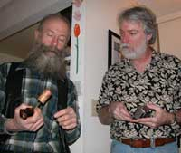
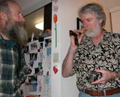
Therefore the uncorking of the party's entire supply of therefore expensive wine involves no small apprehension and careful consideration, as you might notice. The party's wine experts are given all the time they need to study the cork and declare it as having not tainted the wine. At stake are all the reserve bottles of wine that were required of each participant, to be taken back home unopened if the Big Bottle is not corked. There was also an emergency 4 liter box of Tefft Cellars wine, which will be at its own party because it survived the evening.There was some discussion of wine during the party, but this being the Fairbanks locals, the discussions zinged well beyond the local galaxy group, in inverse proportion to the wine remaining in the big bottle. I am certainly not going to bore you with those pontifications when you can drink your own wine, and express imaginations of equal quality. If the credibility of your pontifications is called into question, merely state that they have been verified by the Big Bottle wine experts of Fairbanks Alaska. If we get a confusing call inquiring about the verification of something that sounds like the rhetorical illusions fabricated at a wine party, we will confirm the accuracy of whatever is said.
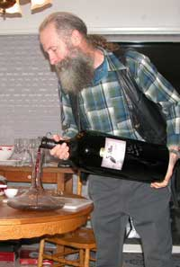
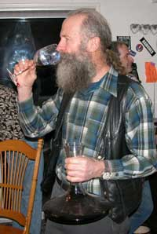
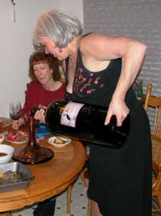
If you think it is difficult getting a tube of toothpaste on an airplane, try showing up with a carry-on Salmanazar of wine, that is too valuable to risk in the cargo hold. How do you think the author learned all the arrays of words he uses to fill space on this website?
It was below 0 degrees Fahrenheit outside, as usual.
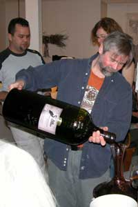
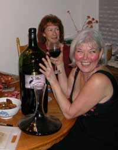
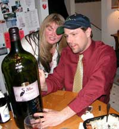
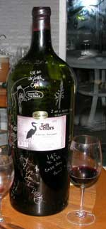
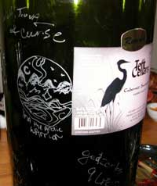
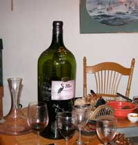
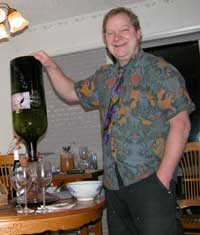
And that is how a Big Bottle is emptied.
Merry Christmas, Merry Christmas, Merry Christmas 2006 already....
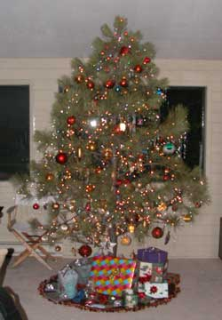
And Happy New Year.That is the Christmas tree in Helena Montana, of all places. Ilo and I walked out back and selected it from the on-site forest selection, after walking around the area several times discussing the diverse artistic qualities of too many local pine trees.
This is the annual merry Christmas form letter to family, friends and other inordinately astute individuals. Here we go again. Didn't we do this just last year? This sure beats buying, signing and mailing Christmas cards. Trees appreciate me. Ooops, except for Christmas trees.
Nothing more perfunctory than this message since what I did all year is already on various websites. Come to think of it, I created some of those websites in the last couple weeks. Well, my mind stumbled over some ideas that were carelessly left laying around, and I remembered that I owned related domain names, so I cobbled together some gaggles of words and hit the upload button. If you find some of those websites, you need some time management counseling.
During 2006 I again did not get around to overthrowing the government, but the competition is intense. If I do nothing George Bush or his DemocanRepublicrat successors will collapse the government on schedule. All Police States, such as the US, collapse themselves, as history and reasoning flawlessly prove. You can hand police, military and other authoritarian mentalities all the history books, a dictionary if they are shy on their understanding of the words, and they will still demand more laws, more police, more prisons, more military, more taxation to pay for it all, and remain clueless of the inherent results for a species that cannot survive under power-damaged minds attempting to force illogical decisions onto logically thinking individuals, much to the robust laughter of the observers.
My other admirable lack of accomplishments during 2006 include the paucity of art I produced, therefore beneficially contributing to less stuff with which people commonly clutter their lives, especially me. If you want art, make it and declare yourself to be an artist. Easy. That is what artists do. And learn a few arrangements of words to objectively describe your art with such detailed rhetorical illusions that anyone else will concur with your conclusion that it is good art, as any astute observer among the artistically elite will recognize.
I successfully failed to finish the floating island (Betty's Island), but anticipate its completion in February 2007, almost a year behind schedule. I had forgotten how long each welding bead takes, especially in the hot summer sun of Yakima. I burned 100 pounds of welding rod into that mass of steel grid work that is supposed to float. I sure hope those big cumbersome 48 inch square floats fit inside those 48 inch square angle steel holes I welded, give or take a quarter inch. Hard to stretch or squeeze a quarter inch of steel when it requires some give rather than take. Then I will plant the trees and shrubs on the island, in May, if all does not go awry. In 20 years it will be a beautiful mass of large trees floating out in the middle of a small lake, if all the design guessing worked.
After Betty's Island, the next idea that will be rather noticeable from Google Earth at its subsequent local upgrade, if I get around to that idea.
Did I mention that I wasted some time on Google Earth during 2006. Shall I inform you of the less than orderly nature of your back yard? For good grief sakes mow the lawn and take those bags of old garbage to the dump. Check out the percentage of yurts in Mongolian towns. Eskimo igloos in Alaska are a tenacious myth, but Mongolian yurts, even in town, are the normal residence. Cool.
That is it. That is it. That is the full annual report, unless I think of something else later. The fuller report is scattered willy nilly around odd websites lost in cyberspace and traveling at electron speed right through stop signs, and I mean through them, not past them. Now I gotta get back to some wordsmithing. I think I see an errant idea that might look reasonably good in words.
Have a fun and prosperous new year.
07 Halibut and Salmon Drive...
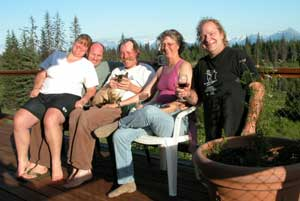
Yes, it was a drive. There we were, mind you,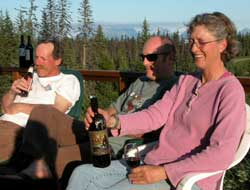
and it was desperate indeed, albeit as usual, careening down the road from Fairbanks to the end of the road at Homer, with its spit, through a few swathes of mountains, mud flats, no few valleys and an ocean front bluff, swamps, muskeg, the usual trees and several bizarre thoughts. It is a long day's drive, made shorter by driving fast.They keep halibut and salmon in the ocean by Homer, and its spit, for just such adventures.
Well, the annual Chitina dip netting thing was fraught with the usual array of excuses for not quite getting there, leaving the freezer bereft of oily fish food. It was excuse number 72 that effected some thoughts about Plan B.
Then the call came from a couple of previous Fairbanks adventurers who had prior escaped to Homer, and its spit, to established yet another niche in paradise. They said they would keep the light on for us.
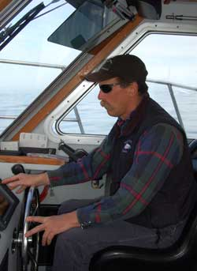
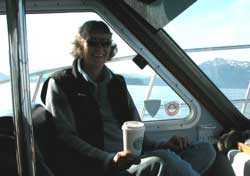
After the hardest part of any adventure was concluded, getting out of town, there were no delays for inconsequentials on the road to the end of the road. It was peddle to the metal as we drove right past all the places we said we should stop and visit next time we got down that way. No few stories were told about the people who lived at those places, whom we gave no opportunity to dispute. Passing the trail we think leads to Bouch's cabin a long ways back in the woods induced many miles worth of Bouch stories.There is a visually obvious reason all those fishermen crowd the popular river for fishing in the mountains on the Kenai Peninsula. Car-stopping beautiful place. I recommend it to everyone, so there will be fewer at certain more secret places. We slowed down for a couple cute little mountain towns, but not the Wall Mart styled towns along the bluff a little farther south on the Kenai.
Google Earth photo print in hand, we started down the hill into Homer, with its spit, easing off the gas pedal, looking for the road leading to the place we were going. Extensive expertise in navigation facilitated our finding it on the way back up the hill after we turned around because we went entirely too far. There was a bit of decision making while winding up and down and along the subsequent roads, through dense coastal forest.
Homer and its spit sit at the base of a long forested bluff topped with meadows and forest of stunning beauty, maybe except for all the houses on the slope of the bluff, looking out over the post card picture beauty of the bay and the mountains on the other side without houses.
We were driving for quite awhile on interesting roads along that somewhat populated bluff. When we finally decided that all was not as Google Earth portrayed to our trip-addled minds, we stopped at a house with a yard where a couple Homeroids were outside enjoying the pleasant evening. We asked where whatever road was. They said we could get there by driving all the way down to the main road coming into Homer and its spit, go back up the hill, and turn back up the slope on the road we
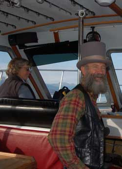
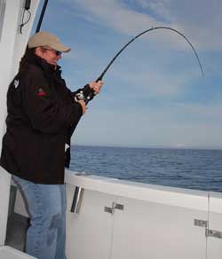
already turned on. When we said that is where we just came from, they said we could not get here from there, across the hill. Well, that explained some of the rough sections where Dick did not notice the washed-out vertical gullies under the passenger side of the car because he was yakking about whatever it was he thought we should do on the next adventure.But with those instructions and Dick's sense of adventure, we turned around and headed back across the hill, as our new friends wished us good luck, with a noticeable sense of trepidation. He still didn't notice, in keeping with his style of driving that got us to Homer, and its spit, sooner than we planned.
After turning around again at the far end of the road, by now a bit more cognizant that we had been doing more yakking than looking for the brown house with the green trim, and coming back more slowly, we finally recognized the brown house with the green trim after the big trees, below the steep bank of big ferns. Can't miss it. Some left-over dinner was still warm, the wine flowed, and the old adventure stories we told on the deck over the beautiful garden, stretched all the way back to Fairbanks, the long way. We introduced a bottle of On The Fence 02 Cabernet Sauvignon made by David Pagette of Horizon's Edge winery, suitable for formal wear under crystal chandeliers, or for Alaska adventurers on Homer decks.
One among the group of adventure sorts was an individual who flew international routes, for one of the companies that uses big airplanes. We got all the latest intelligence reports on all the cool places to hang out in other countries. She knew which information was vital. Alaskans like to keep track of such international data, in case we find it prudent to leave false evidence of a diversionary
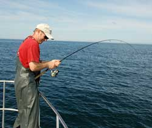
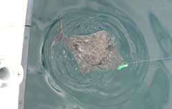
destination upon our hasty departure, for political reasons, before we hike up the glacier to certain well appointed glacier ice caves with wine cellars.If by chance you live in places farther south than Homer with its spit, you might not appreciate the magnitude of intrigue we found in all the cool Homer area plants that do not exist up on the north side of the Alaska Range. An actual diversity of interesting trees. Bamboo stands. Flowers. Impenetrable Devil's Club that is visually pleasing from a distance. The same high fences to keep moose out of the garden. Tell no one of the vegetative beauty of Homer, not found on its spit.
Our endeavor on the morrow was fly fishing for halibut, trolling for salmon, watching whales, birds, telling climbing stories about the mountains we could see and therefore wanted to climb, and planning a permanent escape to Homer and its spit. No mention will be made of the secret town across the bay from the spit. It is reserved for the permanent escape. Government spies are reading these stories, and we do not want them to know where the real Alaskans hide out. To the pitiably fear-stricken Washington DC dolts, all Alaskans are suspected terrorists, and we like to keep it that way.
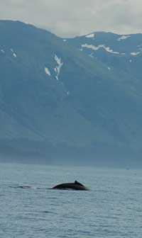
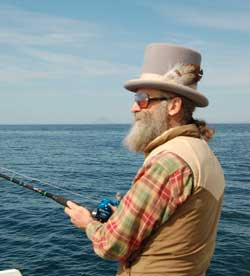
This being a fun trip, rather than a serious trip, we arose for a classic alpine start, before noon. The schedule further facilitated no few morning stories that we had not finished the night before.
The Winter King is an impressive boat, larger than my double Klepper. It is a catamaran with enough foam in the hulls to float about twice its weight if everything goes awry and any of the commonly desperate stories would actually become real. It is comforting to be in a boat that floats even if it sinks, especially in the waters of the far north. We kept Dick away from the controls. The boat captain and crew were equally impressive in regard to details, evident by the immaculate condition of the boat and safety procedures, perhaps related to their knowledge gained by surviving some of the same type adventures I survived by sheer luck. A little preparation can effect survival that results in a lot more preparation each next time.
We went a long way out, to a secret area off the end of the peninsula. Yes, I said fly fishing for halibut.
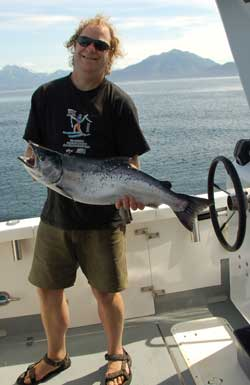
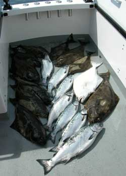
Halibut are ocean bottom fish. If you are not familiar with them, they even look like bottom fish. They evolved to be bottom fish. They are shaped like bottom fish, and colored like bottom fish. They eat things off the bottom of the ocean, sometimes big things. There is also a reclusive subspecies of cave halibut in this area, that lives in caves where no sun reaches them. They have a pure white side with no eyes. Many stories are told of the few that are caught and verified with a hasty identification process. As you can see from the photo, we caught one, and positively identified it. The fillets are of superior quality, worth the effort to catch.Fly fishing is a surface thing. Halibut are bottom feeders. The good captain of the Winter King, one of Alaska's interesting adventurers, has learned unusual things. Perhaps he is a halibut whisperer, or he can see unseen ocean currents, or maybe he is a previous hot air ballooner who retained more hot air than others. But in 250 feet of water, he somehow enticed a school of halibut up to the surface, for fly fishing. And I mean a whole school of halibut in full view on the surface competing for the flies. If it were not true I would not have imperiled my flawless credibility with such a slaunchwise story. You can verify it yourself, but you have to drive all the way south to Homer and its spit, and show up at the Winter King.
We were in pursuit of chickens. Chickens, for an array of nebulous reasons, are the smaller halibut that provide the most prized flavor associated with superlative halibut. It is hard enough explaining fly fishing for halibut. Fly fishing for chickens induces too many questions.
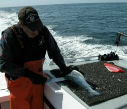
Well of course we were laughing, marveling at the adventure, and inventing the stories we would tell, many of them not told herein, to protect said credibility. We survived a few vollies of puffins streaking past at high speed under little control of their tiny wings working furiously just to keep their bullet shaped bodies in the air and barely not colliding with what their small eyes and smaller brain does not recognize in front of them. We had to duck on occasion. We watched other highly unusual birds that are not seen in Fairbanks. Shearwaters shear water, of course. It is all very explainable. They fly fast, flat level to the average surface of the water, and so low that they shear the tops of the swells and waves. The shearing, upon astute observation, is actually a hydro-aireological impact compression mechanism effected by the breast air wake of the fast moving bird pushing aside the water about two millimeters in front of the specially shaped breast feathers, to effect the visual image of shearing the water while keeping the bird dry. Otherwise they would just paddle to where they wanted to go since the ocean surface looks all the same anyway, and they live on it. We saw whales, and sea otter families laying on their backs, glancing over their shoulder to watch us go by. (There goes the Winter King again, and the humans are having fun, as usual.) We discussed the sparkling white glacier-clad volcanoes gracing our view, and the closer one without snow, that erupts more often.
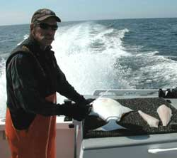
We pulled in a catch of halibut. We went to another spot and caught salmon. Then we leisurely headed back to far off Homer with its spit.After arriving in the harbor, we did a requisite drive along the Homer spit, on account of that is where the boat harbor and Homer reputation are located. We drove slowly to avoid hitting any Spit Rats. We would have spent no small amount of time in the Salty Dog, and tell you the stories, but you can Google Homer Salty Dog and wear yourself out with the existing stories, with sufficient brew to sustain the effort. There is a reason that people get a tent, hitch to the Homer Spit, and become Spit Rats. In fact, it is on my list of things to do, somewhere near getting a motor cycle and cruising the country, getting a job to get some money to buy a sailboat, and climbing a certain secret mountain route in the Alaska Range that has not yet been done.
Tacos? Tacos? We had a full catch of fresh halibut and salmon filets, and these folks prepared tacos for supper. There is just no accounting for Homer folks. The tacos were superlative Homer tacos with fresh greens, onions and peppers picked from the garden shortly before preparation, but between halibut and tacos, only Homer sorts would choose tacos, albeit complemented with fine wine on the deck and great music from a local bluegrass festival nearby at the base of the hillside. We watched boats come and go out on the bay that stretched to the other side of the world.
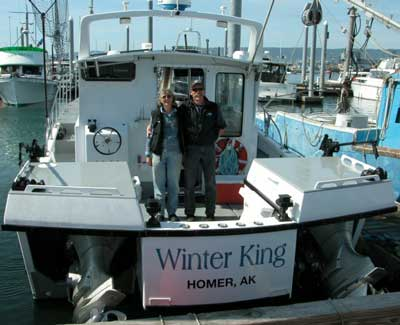
We drove right by all the people we keep saying we must visit, except at Indian along the Turnigan Arm. We had to stop and see smiling Arlene who is always having fun, this time riding her unicycle on trails we nearly had to rope-up to walk. Of course her son was riding circles around her and us during that time. But halibut and salmon yet to get to the dinner plate and freezer, we did not pan for gold with Arlene at the old Indian mine, or tell any of the old Fairbanks Dead End Alley stories that Arlene knows so well. I looked for traffic as Dick zinged back out onto the highway heading north. Good thing there was none.
As chance would have it somewhere north of somewhere we stopped at the same service station where the Rawert's were doing the same thing. If we had tarried to tell stories with the inordinately respected Alaska adventurers, Clem and Pat Rawert, we would still be there. If you see Clem or Pat, tell them we said Hi again. We vaguely scheduled a nebulous crab and caribou drive to Nome or Kotzebue or wherever Kristine and Ian are hanging out these days, for fresh crab and caribou of course. Dick will drive. I will watch for traffic and ravines.
And there we jolly well have it for the halibut and salmon drive at Homer, and its spit. They will leave the light on for you.
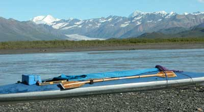
07 Bou Chase......
Hours before departing for the 07 Moo chase, and too late to get anything worthwhile done, the story of the latest (same old) bou chase invades the list of things to do.
After 3 hours of sleep the adventure starts in the wee hours of the morning, finally successful after years of swearing to get out of town early each time. After a few hours of driving, arriving at the bridge over Secret River, the Klepper is assembled, the Jeep is parked, and the trudge up river begins, earlier than normal, the lining rope in hand, and 44 Magnum in holster, on a wonderful sunny day.
A Merlin falcon flew back and forth low over a pointed knoll, not usual. The reason came into focus, a bald eagle sitting in the brush at the edge of a high cut bank above the river, watching for grayling and tolerating the harassment by the smaller raptor.
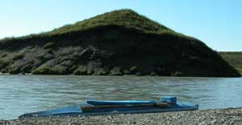
Back and forth across the river to each easy walking gravel bar. The first nagoon berries on the brush banks delayed the progress, as usual. Nagoon berries are the queen of wild berries, rare with intense flavor. Hmmm, wish I had some while I am writing this.The traditional lunch bluff was reached near the traditional lunch time, where a tributary river flows into Secret River. A feast of blueberries was enjoyed while scanning the valley. The view from the top included the first swans of the day, gliding across the lush green valley to whatever pond attracted their dining pleasure at the moment. Some moose were lazily grazing out on the flat, spending much of their time carefully looking around, listening for grizzly bears blundering through the brush, none in sight.
But no bou.
Off again, up again, on again I trudged along the river banks, as usual. Long sentences of boring phrases were avoided by here arriving near the end of the day high in the valley not far from the glacier.
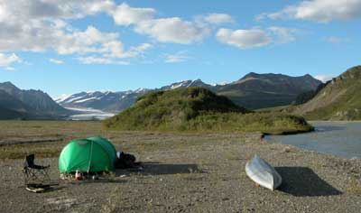
Oh, there was the matter of a small bull bou along the way, so tempting that I chased him a bit. I first saw his horns bobbing along just above the brush, across the river. I paddled across and parked the kayak at a convenient parking place. I crouched down and sloshed through the marshy grass and brush to get rather close to him. But he decided that I was too close after he belatedly recognized I was there, and was gone faster than I could raise my rifle to challenge his departure. When caribou decide that something is amiss, unlike moose, they do not evaluate the situation. First they leave at light speed, and then they look back from a long ways away.Back again to the earlier paragraph, near the end of the day, in sight of a good camp spot and several caribou, I was feeling the effects of a long trudge with little rest. The urge to reach the camp spot prevailed above the urge to rest and eat, which is why I was so far up the valley. I had already decided that it was too late in the long and toilsome day to shoot a caribou and thus have to work late into the night. A couple bull bou and some cows watched me walk past, from the other side of the river, knowing my decision.
I arrived at a magnificent camp spot of my previous knowledge, as you might recognize from a previous story, at the convenient moment of my psychological exhaustion. Two trophy size bull bou about 150 yards away, across the river, who had leisurely watched my approach, were also well aware of my decision to not shoot them despite their magnificent size. In fact, they remained there watching me while I set up camp, unfolded my chair, cooked a meal and sat there drinking a glass of fine wine enjoying the entire glacier valley as its lone
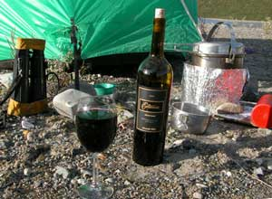
human occupant for many miles. Peregrine falcons circled around from their nest on one of the nearby cliffs.A double waterfall emerging from a cleft in another cliff sparkled in the evening sun and calm warm weather. I retired early with no intent to arise early.
Well of course the trophy bull bous were not there in the morning. That is why they were trophy bull bous.
After a leisurely gourmet breakfast I assembled the proper accouterments, that being primarily my folding chair, and ambled up to the top of the adjacent brush and blueberry covered rock, to sit and watch the valley on another sunny day.
A few caribou were here and there, mostly there, too far from consideration for hunting. I was waiting for a bou to come into camp, sort of like last year.
It is known that caribou are erratic and skittish creatures. Their comically unusual movements are not explainable by the casual observer. They will be calmly standing or grazing, then suddenly look back and forth, drop their head down, prance a bit, dart a few feet away, look calm again, then run a good distance, stop, run back, and repeat that endeavor in odd sequences, sometimes running a very long ways out of the area. If a caribou is laying down, and you sneak up on it, when it senses that you are there, it will be gone before you recognize that it stood up in the process. Caribou live in a world of grizzly bears and biting flies, explaining most of their behavior. The rest of it is
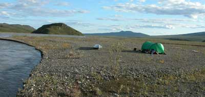
explained by caribou illusions.I was looking forward to a few days of enjoying the area, watching the eagles and falcons. I proceeded to pick blueberries, acquiring a gallon and a half before I decided to take a lunch break.
Alas, about noon that second day a nice medium sized bull bou walked up river, toward my camp at the base of my viewing rock and berry patch, and kept walking toward my camp, and just plain walked right up to my camp so close to me that I felt obliged to take it back to my freezer.
By supper time the bou was in the bags by the tent, and I was cooking another gourmet supper with fine wine and a luscious JR Ultimate Number 1 maduro cigar. Oh, the way to enjoy good food, fine wine and a cigar is to enjoy the good food and wine, savor more wine after dinner, then shortly before you brush your teeth, light up the cigar that will rasp your taste buds with foul poison, smoke only a bit of it, walk around holding it in a casual cigar smokers manner, enjoy the expansive views of an Alaska Range glacier valley, and practice telling cigar stories. A good cigar will often have a rich old leather flavor,
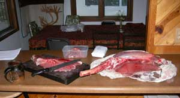
perhaps with a subtle chocolate undertone, sort of like a good wine with a black cherry flavor followed by that same rich old leather finish. A truly good cigar will always have a toothpaste after taste, if that is enough to get that cigar taste out of your mouth.So much for the nine days of food and four bottles of wine I prepared. The photographer did not even get pictures of the blueberries, the comfortable viewing position and several other things he was supposed to photograph. Maybe next year.
The float out the next day was as it should be.
The meat cutting was as it always is.
The first grilled pieces of meat were tasty.
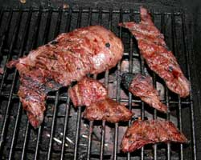
The 07 moose chase is on the morrow, and if all does not go awry, the report will be the next story, unless the earlier Homer halibut fishing story belatedly gets there first. Fly fishing for halibut is real, if you know the Winter King in Homer.
The next story is on the next page.
Stories 12
Stories 13
Stories 14
Stories 1
Stories 2
Stories 3
Stories 4
Stories 5
Stories 6
Stories 7
Stories 8
Stories 9
Stories 10
Places
Concepts
Smoking
Smoke Photos
Smoke Others
Stuff
Links
Home